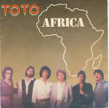
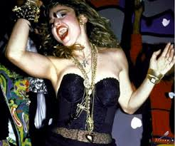

Los 80's
Los años 80 fueron una época que se destacó por el talento y los artistas que protagonizaron la escena musical. Sin duda, las canciones y temas aún son recordados por millones de personas que las llevan muy presentes en sus playlist.
Además de los peinados, de los atuendos coloridos, de la onda glam y de los extravagantes estilos que se manejaban en esa temporada, la música logró marcar una huella muy grande en el desarrollo de la industria a lo largo de los años.
Muchos temas lograron destacarse y alcanzar un éxito a nivel mundial, convirtiéndose así en un emblema de aquel momento. Varios brillaron por sus ritmos, por sus letras y hasta por sus videos musicales, que se grabaron en la memoria de infinidad de fanáticos.
Los géneros que más relevancia tuvieron entre el público fueron el pop, el rock y las baladas en inglés, las cuales fueron representadas por artistas de todo tipo. Muchos han llegado a la actualidad y siguen interpretando sus éxitos en distintas presentaciones alrededor del mundo.
1. Billy Jean – Michael Jackson (1982)
Este tema fue compuesto y producido por Michael Jackson en 1982 y está incluido en el sexto álbum, Thriller. ‘Billie Jean’, según afirmó el cantante, habla de un grupo de chicas que él y sus hermanos conocieron durante una presentación de The Jackson 5.
Este sencillo contiene un fundamento anónimo y habla de cualquier chica fanática de alguna banda de aquella época, pues describe las reaccione y comportamientos de estas al momento de ver a su artista favorito.
Michael Jackson recibió dos premios Grammy en 1984 por el tema , en la categoría de ‘Mejor Canción masculina’.
2. Africa - Toto (1982)
Esta canción hace parte del repertorio del legendario grupo de rock Toto, el cual lanzó este éxito en 1982 y tomo el primer lugar en el Billboard Hot 100 en 1983. Fue escrita por el teclista David Paich.
Aunque el video es básico, se convirtió en uno de los videos musicales más vistos en la época por cada verso plasmado en las imágenes. Se puede observar a la banda tocando entre distintas pilas de libros, mientras un investigador busca un ejemplar titulado ‘Africa’.

3. Girls Just to Want a Have fun – Cyndi Lauper (1983)
Cyndi Lauper se convirtió en una de las artistas más importantes de la década, luego de lanzar la canción ‘Girls Just to want to Have Fun’ en el año 1983. Este éxito fue tomado como un himno para todas las jóvenes que buscaban ser libres, pasar tiempo con amigas y lograr pasar momentos agradables con sus conocidos.
Con un extravagante color de cabello, atuendos armados con vestidos, tacones y abrigos, Lauper se posicionó como uno de los personajes más irreverentes del género pop, pues cada canción hablaba de un momento de su vida y lo plasmaba con videos significativos y divertidos.
Se ubicó en el puesto número 2 en la lista Billboard Hot 100 en 1984.
4. Every breath you Take – The Police (1983)
Esta emblemática canción es interpretada por el famoso grupo de rock The Police. Fue lanzada en 1983 e impulso a la agrupación al éxito. Encabezó la lista Billboard de los 100 sencillos más vendidos durante ocho semanas.
El video de ‘Every Breath you Take’ muestra a Sting, vocalista de la agrupación, interpretando la letra con un fondo oscuro y la imagen totalmente a blanco y negro.
Actualmente se encuentra posicionada en el puesto 84 de la lista de las Mejores 500 canciones de todos los tiempos, según una publicación de la revista Rolling Stone.
5. Karma Chameleon – Culture Club (1983)
Este éxito hace parte del repertorio del grupo Culture Club, liderado por el cantante Boy George, el cual dio mucho de qué hablar durante esta época por su controvertida imagen artística.
El sencillo recibió el Brit Award en la categoría ‘Mejor Sencillo Británico’ en 1984.
Este trabajo es relevante en la industria por su video musical, el cual fue dirigido por Peter Sinclair y está ambientado en el Mississippi del año 1870.
La historia habla de un grupo de personas de alta sociedad que abordarán un vapor de ruedas que lleva por nombre ‘El Camaleón’. Allí suben todos y entre ellos un ladrón, el cual hurta las joyas y objetos de valor de todos los presentes.
El video es característico por el traje colorido y extravagante que lleva puesto Boy George, pues el maquillaje y su apariencia femenina lograron llamar la atención de cientos de personas a nivel mundial.
6. Like a Virgin - Madonna (1984)
Podría decirse que esta canción es una de las más importantes de los años 80, pues la irreverencia, la rebeldía, la sensualidad y el estilo único de Madonna, lograron cautivar a millones de mujeres en el mundo.
Publicado en 1984, ‘Like a Virgin’ llegó a posicionarse en el puesto número uno del Billboard 200, además de llegar a la cima de las listas internacionales. Recibió un disco diamante por lograr distribuir más de diez millones de copias en EE. UU.
El video musical marcó una huella importante en el desarrollo de la década, pues la letra y la peculiar moda se introdujeron en lo profundo de la sociedad que quería adaptar estos atuendos y estilos a todo.

7. I want to Break free - Queen (1984)
Bajo la creación de la banda de rock británica Queen, este tema tomó impulso y reconocimiento en los 80’s por su gracioso y emblemático video, donde Freddy Mercury y los otros integrantes de la agrupación aparecían personificando a mujeres de una misma familia, realizando los quehaceres diarios.
El video fue censurado por MTV en Estados Unidos durante esta década y solo llegó a las pantallas hasta 1991.
Uno de los éxitos que llevó a la fama al grupo en los años 70 fue 'Bohemian Rhapsody'.

8. Wake me up before you go go – Wham (1984)
Interpretada por el artista George Michael, esta canción pop fue lanzada en el año 1984 y se convirtió en número uno en Reino Unido.
Además, según se conoce, la inspiración del vocalista para crearla fue una nota que le dejó un compañero en un hotel donde residían por unos días y donde el hombr
e le decía: “Don’t forget to wake me up up before you go go, George”, haciendo referencia al tartamudeo de este.
Con un trabajo original, la banda Wham! logró el éxito con el video de esta canción el cual era muy dinámico y bailable. Poseía coloridos fragmentos y luces de neón en varias escenas del clip.
La canción llegó a la posición número uno del Hit Parade.
9. Take on me – A-Ha (1985)
Se caracteriza principalmente por el video musical, el cual está ambientado en una historieta de cómics, la cual cobra vida e introduce a una joven lectora que se encontraba sentada en un café.
El clip está protagonizado por el vocalista Morten Harket y Bunty Bailey (novia de aquel momento de Harket) y habla del amor entre el personaje de los cómics y la joven.
Esta canción se destaca por los teclados y el ritmo contagioso en cada uno de sus versos, además de la melodía que se escucha al inicio.}
10. Livin' On A Prayer – Bon Jovi (1986)
Esta canción es considera la insignia de la agrupación y tomó relevancia durante esta época en el género de rock. Fue escrita por el vocalista Bon Jovi y el guitarrista Richie Sambora y es considerada una de las 200 canciones con más descargas digitales en Estados Unidos.
El video musical fue dirigido por Wayne Isham y plasma el proceso de preparación de los músicos antes de salir a un concierto donde brillan bajo los bits del rock.